<div class="home-container">
  

    <p class="perspective-text fade-text">
      The #7DaysOfCode project is a programming challenge proposed by Alura School,
      focused on developing an application using the Angular framework.
      The goal of the project is to create a web interface that consumes a movie data API from the Star Wars saga,
      providing users with an interactive and informative experience about these iconic films.
      This is an excellent opportunity for developers to enhance their skills and challenge themselves.
      With this project, we can explore the capabilities of Angular, work with real data,
      and develop a complete and interactive web application.
      The challenge not only promotes individual growth but also fosters collaboration and knowledge sharing,
      creating a community of engaged and motivated developers.
      The #7DaysOfCode project is a valuable experience for all participants,
      fueling their learning and passion for programming.
    </p>
</div>

